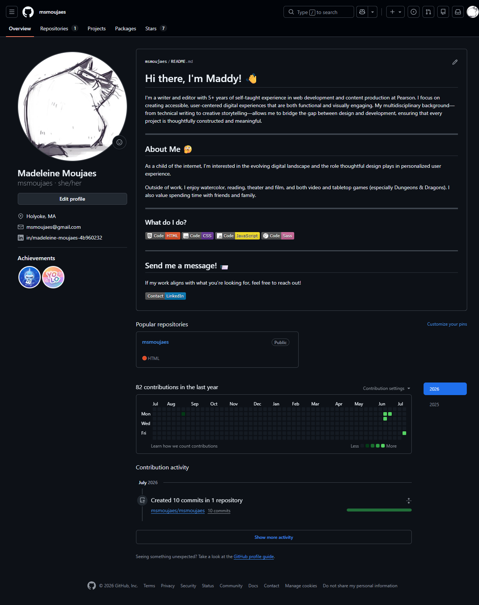

Visual Tour Through a Document
This is a visual tour through a document. As you scroll down, the graphic on the left will highlight different sections of the document to help you understand the content.

What You Need
You need a few important things to make this work.
- First, you need a graphic that represents the document you want to highlight. This could be a screenshot of the document, a diagram, or any other visual representation.
- Second, you need to create an SVG overlay that will highlight different sections of the graphic as the user scrolls through the text.
- Finally, you need some CSS/JavaScript code that will style the SVG overlay/detect when each step of the text is in view and update the SVG overlay accordingly.
This file includes all of the code you need to make this work, including the HTML structure, CSS styles, and JavaScript functionality.
SVG Overlay
The SVG overlay allows you to highlight specific areas of the graphic as the user scrolls through the text.
Each rectangle corresponds to a different section of the graphic that you want to highlight; and each has an ID and a unique set of coordinates that define its position and size on the graphic:
- x - denoting its position on the x-axis (horizontal)
- y - denoting its position on the y-axis (vertical)
- width - denoting the width of the rectangle
- height - denoting the height of the rectangle
- bonus specifications:
- rx - denoting the x-axis radius for rounded corners
- ry - denoting the y-axis radius for rounded corners
Finding Coordinates in an Img
You can find these coordinates by using a tool like Figma or any other design tool that allows you to inspect the dimensions and positions of elements in your graphic.
You can also adjust the coordinates directly in the SVG code to fine-tune the highlights as needed.
Proper ID Maintenance
Be sure to give each step a unique ID and a data-step attribute that corresponds to the ID of the rectangle in the SVG overlay.
This will allow the JavaScript code to correctly identify which rectangle to highlight as the user scrolls through the text.
The Finishing Touches
Feel free to use my existing css and JavaScript code as a starting point for your own implementation. You can customize the styles, animations, and functionality to fit your specific needs.
NOTE: The image in the img folder is just a placeholder. You will need to replace it with your own graphic that represents the document you want to highlight.
Send me a message!
If my work aligns with what you're looking for, feel free to reach out!